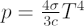

Electromagnetic radiation exerts a minute pressure on everything it encounters. This is known as radiation pressure, and can be thought of as the transfer of momentum from photons as they strike the surface of the object.
In everyday situations this pressure is negligible, but in the environs of stars it can become important given the vast quantities of photons emitted. In particular, under the essentially blackbody conditions that exist inside a star, radiation pressure is proportional to the fourth power of temperature via the equation:

where T is the temperature, σ is the Stefan-Boltzmann constant and c the speed of light. This means that only a very small increase in temperature will result in a very large increase in the radiation pressure.
The majority of stars that inhabit the main sequence have internal temperatures of millions of degrees and are primarily supported against gravity by gas pressure. Radiation pressure does contribute a few percent, but gas pressure dominates. The internal temperatures of massive stars, however, are hundreds of times hotter, and at these extremes, radiation pressure begins to dominate. In the most massive stars, the mass of the star is supported against gravity primarily by radiation pressure, a situation which ultimately sets the upper limit for how massive a star can become.
Other astronomical objects are also influenced by radiation pressure. The pressure from solar photons is responsible for the creation of the dust tails in comets within our Solar System. Radiation pressure also plays a vital role in the formation of planetary nebulae. As the dying star contracts down to a white dwarf it releases vast amounts of heat. The radiation pressure given off is so strong that the outer layers of the star are pushed out to form the surrounding gaseous nebula.
Radiation pressure is also the driving force behind the concept of solar sails. If the sail has a large enough reflective surface area and is made of sufficiently light material, the photons from the Sun should be able to exert enough pressure to move the spacecraft.